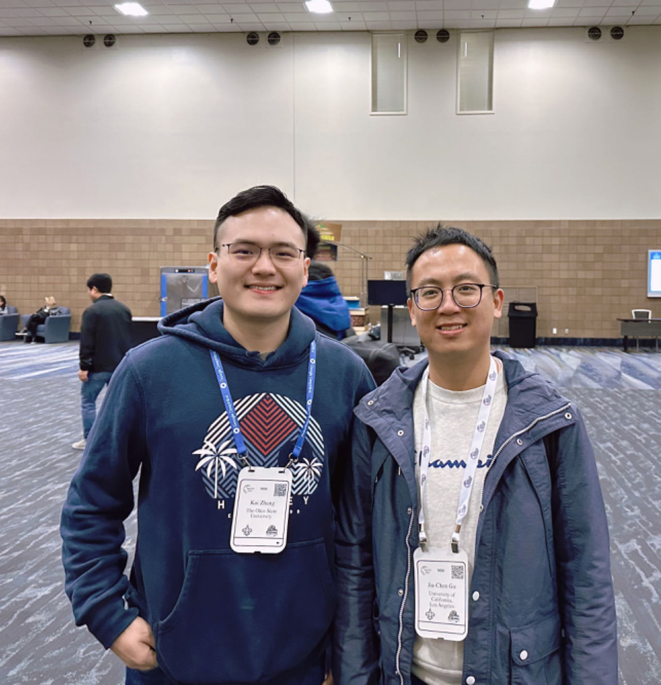

Alumni
- 2023-05 Xiaohan Xu (intern at Microsoft, CAS Master → HKU Ph.D)
- 2022-11 Zhen Li (PKU Ph.D, ACL'23.)
- 2022-09 Zhengwei Tao (PKU Ph.D, ACL'23a,b.)
- 2022-06 Zefeng Cai (intern at Microsoft, ECNU Master, ICLR'23.)
- 2022-06 Xiuying Chen (intern at Microsoft, KAUST Ph.D, ACL'23.)
- 2022-05 Minchen Zhuge (intern at Microsoft, CUG Master → KAUST Ph.D.)
- 2022-03 Kai Zhang (intern at Microsoft, HZCU undergrad → OSU Ph.D, WWW'23)
- 2021-07 Qiyu Wu (intern at Microsoft, PKU Master → UTokyo Ph.D, EMNLP'22)
- 2021-06 Chang Liu (PKU Ph.D, ACL'22/EMNLP'23)
- 2020-09 Jia Li (PKU Ph.D, WSDM'22/CIKM'22/ASE'23)
- 2020-09 Jiachen Gu (intern at Microsoft, USTC Ph.D → UCLA PostDoc, ACL'21/IJCAI'22/ACL'22a,b)
- 2020-04 Changyu Chen (RUC Master. ACL'21)
- 2019.09 Ruijian Xu (PKU Ph.D, AAAI'20/TOIS'21. Huawei talent program.)
- 2019-09 Xueliang Zhao (PKU Master → HKU Ph.D, IJCAI'19/ICLR'20/ACL'22/NAACL'22/)
- 2019.09 Jiazhan Feng (PKU Ph.D, TOIS'22/EMNLP'22)

Two of my interns, Kai and Jiachen, initially met at NeurIPS'23.